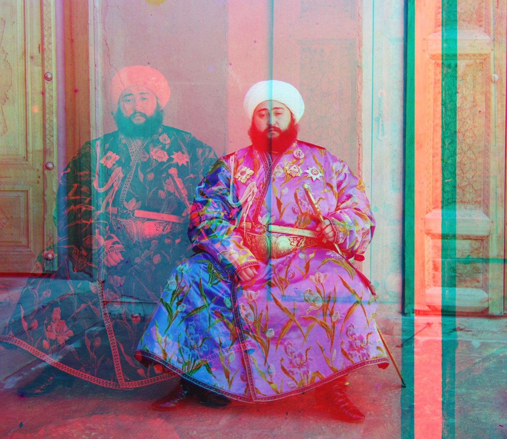
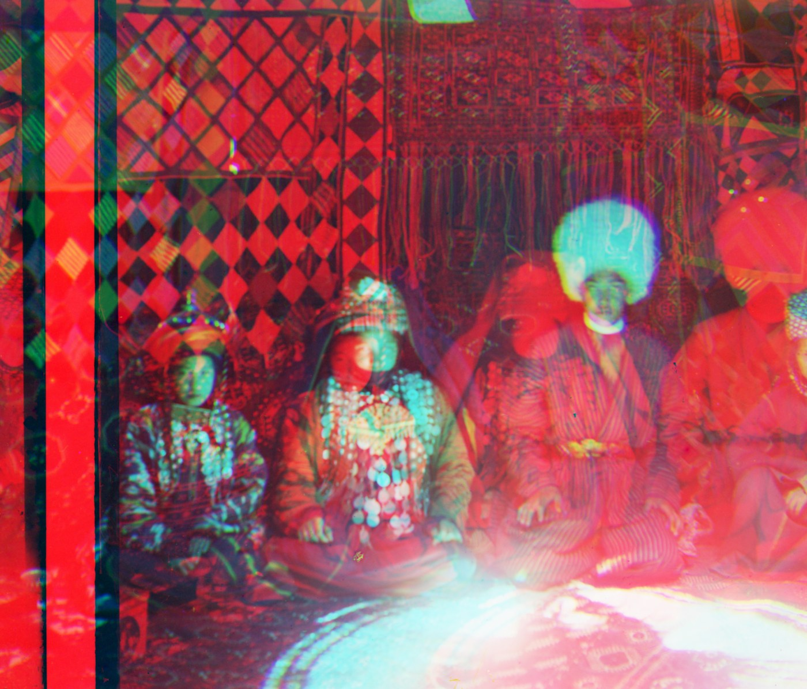
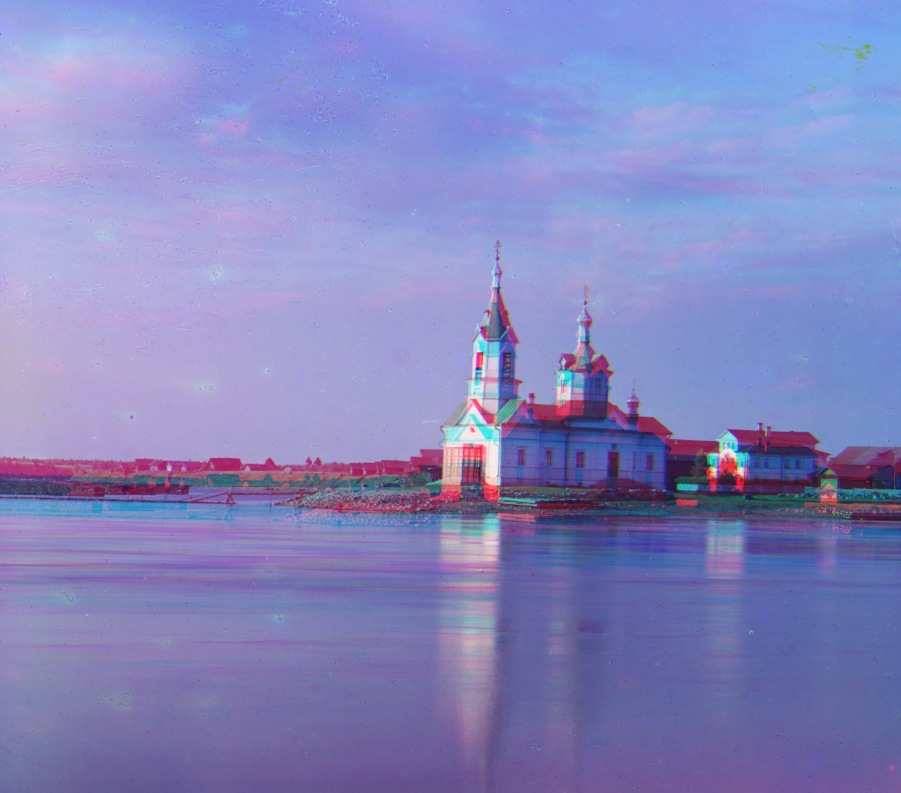

Three plates, one photograph
Between 1907 and 1915, Sergei Prokudin-Gorskii travelled the Russian Empire photographing everything through red, green, and blue filters — three separate exposures onto one tall glass plate, meant to be recombined into color long before color film existed.
Each scan is a tall strip with the three shots stacked top to bottom, in blue, green, red order. If you stack them straight into a color image, you get a blurry, ghosted mess — the camera moved a little between each shot. The job is simple to state: for the green and red layers, find how far to slide them — (dy, dx), meaning down and right — so they line up with the blue layer. Then stack the three lined-up layers into one color photo.
Split the strip
Cut the strip into three equal parts — the blue, green, and red shots.
Score a shift
Slide a layer by (dy, dx) and score how well it lines up with NCC, ignoring the messy border.
Search coarse → fine
Find the big shift on a shrunk-down copy, then fine-tune it as the image grows back to full size.
Stack & trim
Slide green and red by their best shifts, stack into a color image, and trim the ragged edges.
How I score a match
To decide which slide is best, I measure how well two layers line up with normalized cross-correlation (NCC). In plain terms, it checks whether the light and dark areas fall in the same places, while ignoring the fact that one layer might be brighter overall than another. A simple pixel-by-pixel difference would wrongly favor whichever layer happens to be a similar brightness; NCC looks at the pattern instead.
Before scoring, I chop 15% off each edge. The edges are full of black scanner borders and messy fringe where the layers don't overlap — leaving them in would make the search line up the junk instead of the actual picture.
Single-scale exhaustive search
The small JPEG scans only need to move a few pixels, so I just try every shift from −15 to +15 in each direction, score each one with NCC, and keep the best.


Each label is (dy, dx) — how far down and right that layer was slid. Red always needs about twice the shift of green, which makes sense: red sits farthest from blue on the strip, so it drifted the most.
Coarse-to-fine pyramid alignment
The full-size .tif scans are about 9,000 pixels tall, and the layers can be off by well over a hundred pixels — too far to check every shift directly. So I shrink each layer way down, find the rough shift on the tiny version, double it, and repeat at each larger size, fine-tuning a little each step. This coarse-to-fine image pyramid finds a big shift cheaply, then sharpens it.


The eleven provided .tif plates above; my three self-selected plates are in My Picks. Every offset is listed together in the table below.
| Image | Green (dy, dx) | Red (dy, dx) | Runtime | Result |
|---|---|---|---|---|
| church | (25, 4) | (58, −4) | 68 s | aligned |
| emir | (49, 24) | (107, 40) | 75 s | aligned |
| harvesters | (60, 17) | (124, 14) | 73 s | aligned |
| icon | (42, 17) | (90, 23) | 76 s | aligned |
| ilemselga | (40, 7) | (131, 11) | 76 s | aligned |
| melons | (80, 10) | (177, 13) | 72 s | aligned |
| religous_painting | (30, 1) | (70, 6) | 70 s | aligned |
| self_portrait | (78, 29) | (176, 37) | 77 s | aligned |
| siren | (49, −6) | (96, −24) | 76 s | aligned |
| three_generations | (53, 12) | (111, 9) | 79 s | aligned |
| wharf | (15, −6) | (82, −16) | 68 s | aligned |
| roof · mine | (48, −8) | (111, −15) | 73 s | aligned |
| tree · mine | (38, 16) | (84, 31) | 76 s | aligned |
| family · mine, raw-pixel | (47, −12) | (86, −43) | 84 s | aligned |
Three plates of my own
Three more photos I picked from the Library of Congress archive, run through the same steps. One of them, family, made me choose between two ways of lining up the layers — see Bells & Whistles.


Three tricks, shown by turning them off
Three choices made the hard photos work. The clearest way to see why each one matters is to switch it off and watch the photo fall apart. Below is what breaks without each trick — the correct versions are up in the galleries above.

Why not just match brightness?
The obvious idea is to slide the layers until their bright and dark areas line up. But the emir's robe is bright in the blue shot and nearly black in the red shot, so matching brightness yanks the red layer far away — here it lands 782 pixels off, leaving a red ghost of him on the left.
The fix: match edges instead — the outlines where things change from light to dark. An edge sits in the same spot no matter which layer is brighter, so the emir snaps right into place.

Edges aren't always the answer
Matching edges usually helps — but not here. This room is wrapped in carpets with the same diamond pattern repeating everywhere, and those edges look identical no matter how far you slide sideways. Matching edges sends the red layer 571 pixels off, smearing red across the whole photo.
The fix: for this one photo I switch back to matching brightness, which the repeating pattern doesn't fool, and it lines up correctly (shown in My Picks). The lesson: edges are a tool to reach for, not a rule to always follow.

Don't let the frame win
Every scan has a black border and ragged edges where the layers don't overlap — and those edges are the sharpest thing in the whole picture. If I leave them in, the search lines up the borders instead of the church, and the result gets red and cyan fringes along every roofline and reflection.
The fix: ignore the outer 15% of each layer while scoring, so the search pays attention to the actual scene. (I also trim the ragged 8% off the final photo, purely to tidy the edges.)
When it breaks
All seventeen photos end up lined up correctly. But two of them still aren't perfect — and the reason has nothing to do with the sliding. These are limits no amount of alignment can fix.
People who moved
Sliding a whole layer works only if the scene held still. In family, the standing man moved a little between the red, green, and blue shots, so his edges never fully overlap no matter how I slide the layers. The rest of the photo — the seated people, the carpets — is sharp; only the parts that moved show a color halo. Fixing this would take warping different parts of the image by different amounts, which is beyond simple sliding.
The magenta tint on church
Sliding the layers only fixes their position, not their color. The three shots were taken and scanned with slightly different sensitivities, so even a perfectly aligned stack can lean toward one color. Stretching each layer's brightness to a common range — a white-balance step I didn't add — would remove the tint without changing the alignment.